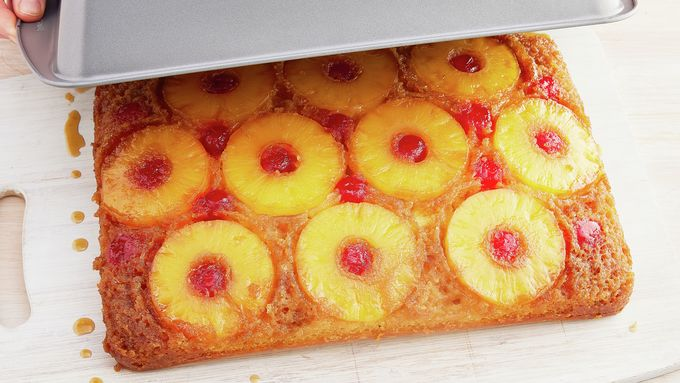

Upside Down Cake

Super Easy Pineapple Upside Down Cake
Wow your friends and family with this classic pineapple upside-down cake. With tasting notes
that boast fruity, gooey, caramelly goodness, it's no wonder why this has been a must-make
favorite for generations.
Ingredients
- 1/4 cup butter
- 1 cup brown sugar
- 1 can (20 oz ) of pienapple slices in juice, drained, juice reserved
- 1 jar (6 oz) maraschino cherries without stems, drained
- 1 box Betty Crocker Super Moist Yellow Cake Mix
- Vegtable oil and eggs called for on cake mix box
Steps
- Heat oven to 350°F (325°F for dark or nonstick pan). In 13x9-inch pan, melt butter in
oven. Sprinkle brown sugar evenly over butter. Arrange pineapple slices on brown
sugar.Place cherry in center of each pineapple slice, and arrange remaining cherries
around slices; press gently into brown sugar.
- Add enough water to reserved pineapple juice to measure 1 cup. Make cake batter
as directed on box, substituting pineapple juice mixture for the water. Pour batter
over pineapple and cherries.
-
Bake 42 to 48 minutes (44 to 53 minutes for dark or nonstick pan) or until
toothpick inserted in center comes out clean. Immediately run knife around
side of pan to loosen cake. Place heatproof serving plate upside down onto pan;
turn plate and pan over. Leave pan over cake 5 minutes so brown sugar topping can
drizzle over cake; remove pan. Cool 30 minutes. Serve warm or cool. Store covered in
refrigerator.
Main source of recipe:Click Here